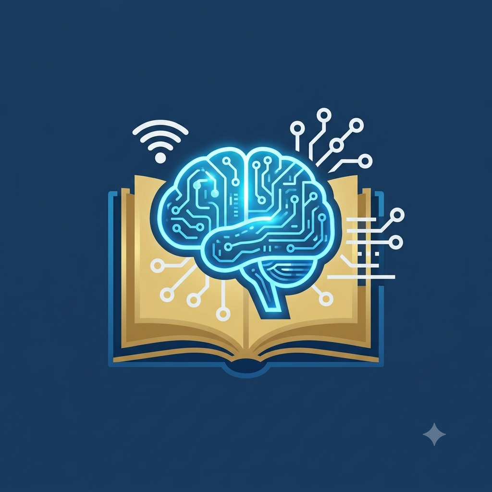

Meu primeiro post
Por: Marcelo Paludetto
Boas-vindas ao meu novo blog! Aqui vou compartilhar dicas de programação e curiosidades da área de tecnologia.

Vou compartilhar conhecimentos sobre tecnologia e programação
Por: Marcelo Paludetto
Boas-vindas ao meu novo blog! Aqui vou compartilhar dicas de programação e curiosidades da área de tecnologia.